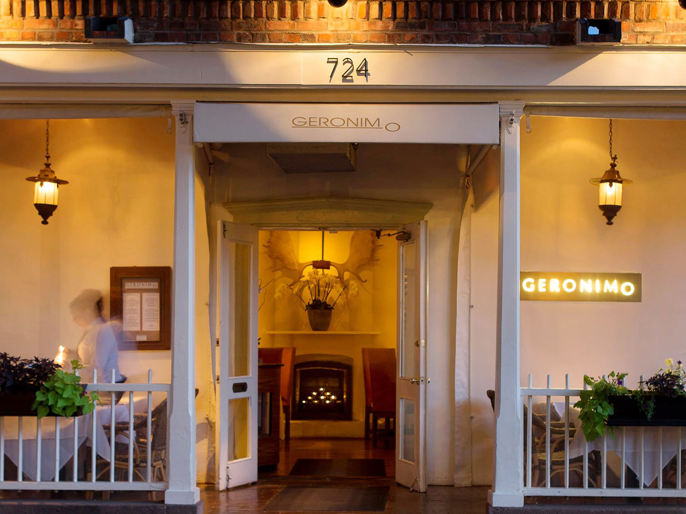
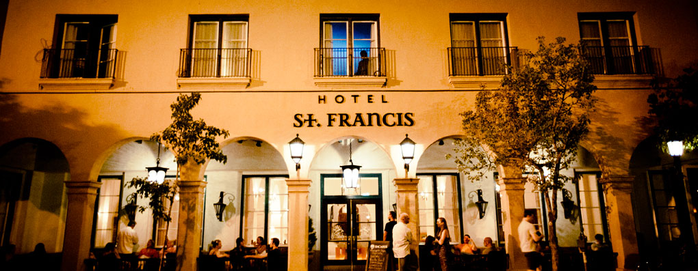
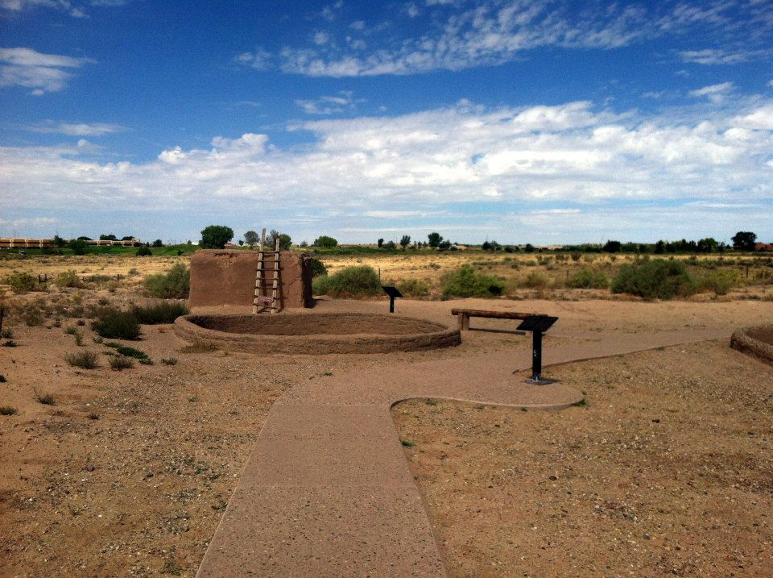

Restaurant
Geronimo
Location: 724 Canyon Road, Santa Fe, NM 87501
Contact Info: (505) 982-1500
Website: geronimo@geronimorestaurant.com
About: Built in 1756 by Geronimo Lopez, Geronimo is a 4 star restaurant, with Vegetarian friendly sector in their menu. There are a wide selection of main courses and appetizers. It is best to reserve your table before getting there. The Mesquite Grilled Maine Lobster Tails dish is what they’re known for!

Living Quarters
Hotel St. Francis
Location: 210 Don Gaspar Ave, Santa Fe, NM, 87501
Contact Info: (866) 925-7881
Website: https://www.hotelstfrancis.com/
About: This is a 79 room hotel with self parking. If you have anyone traveling under the age of 18 and sharing the room, they stay for free. The St. Francis Hotel has breakfast and dinner available as well as a bar and lounge. As well as a 24 hour fitness facility! Also free wifi.

Landmark
Coronado Historic Site
Location: 485 Kuaua Rd, Bernalillo, NM 87004
Contact Info: (505) 867-5351
Website: http://www.nmhistoricsites.org/coronado
About: Coronado Historic Site and the ruins of Kuaua Pueblo are located just minutes north of Albuquerque in Bernalillo. Take a moment of your trip before you leave to visit this historic landmark.

Spa
Body Santa Fe
Location: 333 W Cordova Rd, Santa Fe, NM 87505
Contact Info: (505) 431-6567
Website: https://bodyofsantafe.com/
About: Body Santa Fe provides Nia, Spa, enrichment deals and yoga, as well as so much more. This place is Vegan and kid friendly. Not only you can relax and dine here, but as well as purchase clothing, accessories and home goods.
Museum
New Mexico Museum
Location: 107 West Palace Ave. Santa Fe, NM
Contact Info: (505) 476-5072
Website: http://nmartmuseum.org/
About: The New Mexico Museum of Art is part of the Museum of New Mexico system. The not-for-profit Museum of New Mexico Foundation supports the Museum of New Mexico system. Their mission is to create authentic experiences for their visitors. They want their viewers to get a deeper understanding and experience the enjoyment of art throughout the State. They work with art and artists to explore the human experience, discover new ideas, and diverse cultures.